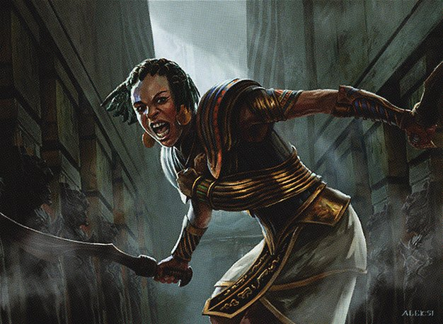

NAYA
Ropes people in

Opening your result…
Open your result if you are not taken there automatically.
Card art via Scryfall: Samut, Voice of Dissent. Magic: The Gathering is © Wizards of the Coast. Unofficial Fan Content permitted under the Fan Content Policy. Not approved/endorsed by Wizards.